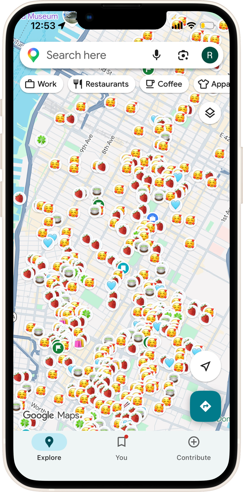
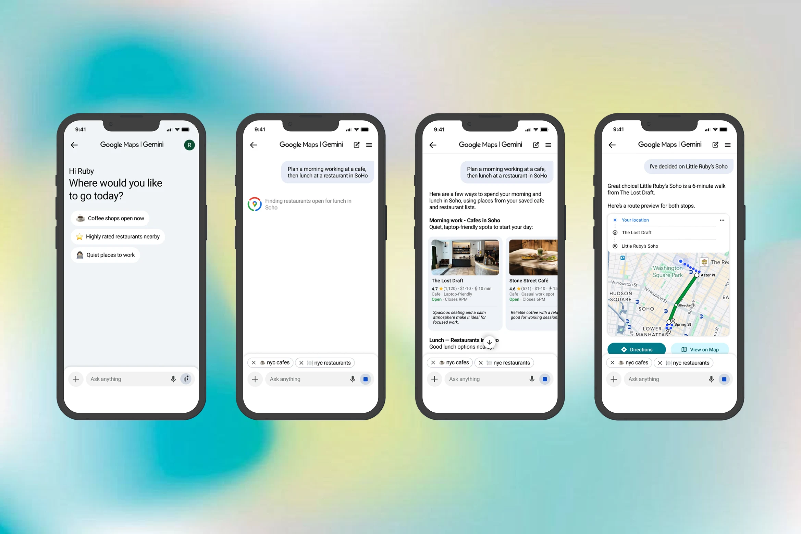

AI Assistant for Google Maps
A personal exploration of how an AI assistant could live inside Google Maps to help users decide where to go, using saved lists, reviews, and real-time context.
I had hundreds of saved places, and no easy way to pick one.
Living in New York City, I rely on Google Maps' saved lists to track places I want to try, sorted by category: cafes, food, bookstores, etc. But as those lists grew, they started creating decision fatigue. I'd scroll through them, forget why I saved a place, and still check reviews, ratings, and distance by hand before deciding where to go.
Note
After completing this project, Google introduced "Ask Maps," an AI assistant within Google Maps that supports natural language queries and personalized recommendations. This project explores a similar problem space, with a focus on saved lists and explainable decision-making.

An AI assistant that meets users wherever they are in Maps.
It helps users make faster, more confident decisions about where to go. The assistant opens from three places in Maps: the main Maps screen, the saved-lists screen, and inside a single saved list.
Flow 1: Open-Ended Discovery
Opens from the main Maps screen, when the user has a general idea in mind but hasn't picked a place yet.
Flow 2: Cross-List Comparison
Opens from the saved-lists screen, when the user wants to decide across several lists at once.
Flow 3: In-List Refinement
Opens from inside a single saved list, when the user wants to narrow down a place within it.
Framing the Project
Before designing any screens, I mapped out the problem, solution, use cases, and constraints to define what this project needed to do.
Google Maps excels at discovery and navigation, but it does not adequately support contextual decision-making.
Saved lists grow over time, often leading to decision paralysis. Users may forget why they saved a place. Reviews contain valuable insights but require manual scanning. Filtering places by situational needs such as work-friendly, open now, or not busy is difficult.
As a result, users usually manually search, scan, and compare to decide where to go.
An AI assistant embedded in Google Maps that can:
- Analyze saved lists
- Understand general queries
- Filter based on situational needs
- Provide explainable recommendations
The assistant helps users answer questions like: "Help me decide where to go right now based on my context and preferences." Users will find better, personalized choices faster with reduced decision time to pick a place.
- General Request - Example: "What Asian cuisine restaurants are nearby?"
- Saved Lists Recommendation - Example: "From my nyc cafes list and restaurants life, plan a morning working from a cafe and a lunch in Soho after."
- Specific Saved Lists Recommendation - Example: "From my nyc cafes lists, what are places I have never been to with Asian-inspired drinks?"
Including Conversational Refinement, like "closer to the subway", "has outdoor seating", "vegetarian-friendly", etc.
Constraints in this project include ambiguous data from reviews, privacy and data access for the AI assistant, and finding the right balance of AI assistance with manual browsing.
Research
I grounded the project in four parallel investigations, each pointing to a pattern worth designing for:
Four areas I explored
Conversations with users
I talked with friends and peers who rely on saved lists to understand how they actually decide where to go.
The current Maps experience
I walked through Maps' search, place details, and saved lists to map out how the app works today.
AI assistants
I tested how ChatGPT, Claude, and Gemini answer real-world questions about where to go.
Google's AI experiments
I reviewed Google's early AI features for Local Guides to see what was already being explored.
Four patterns that surfaced
Decision fatigue in saved lists
Saved lists grow fast, and with no easy way to compare places, choosing one gets overwhelming.
Maps is built for discovery, not decisions
It's great at surfacing new places, but not at choosing between the ones already saved.
Saved lists already reflect taste
The places people save say a lot about what they like, a signal an AI could build on.
Old saves get buried
People save a place, then forget why. Newer saves pile on top, and the old ones disappear.
Ideation
Based on the research, I created three flows, each with a different entry point into the assistant. I mapped them out as user flows, then sketched lo-fi wireframes to get the ideas down quickly before moving into design.


Design
With the flows validated, I moved into Figma to build the hi-fi screens and an interactive prototype. The goal was to make the assistant feel like it belongs inside Google Maps, borrowing existing card styles, iconography, and palette so the chat reads as a Maps capability rather than a separate product.



Designing an AI feature meant designing how it behaves, not just how it looks.
I came in thinking about what an AI feature looks like, and left thinking about how it behaves: how it responds, surfaces information, and guides decisions inside a familiar UI.
Figuring out what to leave out was tough. I kept wanting to pack more into each card, but denser doesn't mean more useful, and the harder call was frequently what to cut.
I'd extend the assistant from single decisions to full trip planning, like "plan my day in Tokyo with my saved list." I'd also build out chat history and editable queries.
It was fun to design for a need I actually have, and exciting to see what AI can look like showing up inside an app I frequently use. I think this is just the beginning of where AI will appear in everyday apps.
Other Projects
Phia x Design Meetup: Designathon Finalist
Designed for Phia, an AI-powered fashion shopping app, as a designathon finalist.
Yammii: Restaurant Online Order Revamp
Simplified and modernized Yammii's mobile order flow for a faster, more engaging experience.
Hemi: A Personal Reflection Journal
Designing and building a digital journal in Claude Code, from a paper planner sketch to a fully deployed web app.